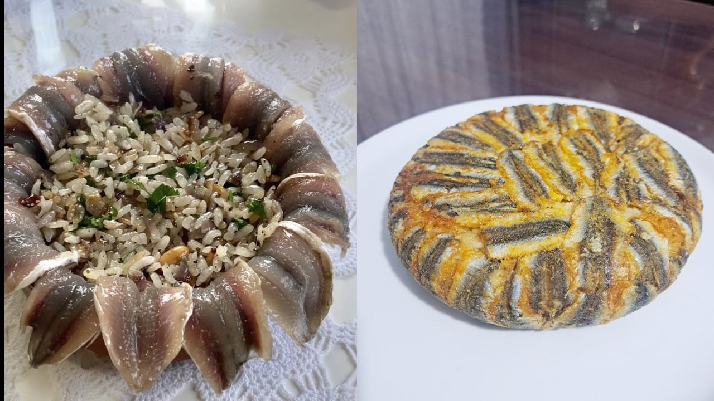

Hamsili Pilav
Hamsili pilav, Trabzon ve Rize başta olmak üzere Karadeniz Bölgesinde tüketilen bir hamsi yemeğidir.

Hamsili pilava ait ilk tarife 1764 yılında yazılmış bir risalede rastlanmaktadır.
Yapılan bir araştırmada, Ayder yaylasını ziyaret eden turistlerin ve bölgeye gelen ziyaretçilerin en çok tercih ettikleri yöresel yemeğin muhlama olduğu gözlemlenmiştir. Yapılan diğer bir araştırmaya göre ise Ankara’da en bilinen ve beğenilen Karadeniz yemeğinin muhlama olduğu sonucuna ulaşılmıştır
Tarif
Malzemeler
- 1,5 kilo hamsi
- 3 adet soğan (rendelenmiş)
- 2 yemek kaşığı dolmalık fıstık
- 2 yemek kaşığı kuş üzümü
- 1,5 su bardağı pirinç
- 1 tatlı kaşığı yenibahar
- 1 tatlı kaşığı karabiber
- Tuz
- Maydanoz
- 2 su bardağı sıcak su (pilav için)
- Tereyağı
- Sıvı yağ
Yapılışı
- Hamsiler güzelce ayıklanır ve kılçıkları temizlenip yıkanır.
- Hamsiler suda bekletilir ve tuz, limon suyu eklenir. Bu sayede hamsi kokusu pilava sinmez. En az 20 dakika.
- Kuş üzümleri bir kaseye alınıp ılık suda bekletilir.
- Pirinçler yıkanıp sıcak suda tuz eklenip bekletilir.
- Tencereye tereyağı ve sıvı yağ koyulur. Soğanlar eklenip kavrulur.
- Fıstıklar eklenip kavurmaya devam edilir.
- Kuş üzümlerinin suyu süzülür ve tencereye eklenir.
- Karabiber, yenibahar, tuz eklenir.
- Pirinçler eklenip suyu da eklenip kısık ateşte pişirilir.
- Pişince maydanoz eklenip karıştırılır.
- Borcam tereyağıyla iyice yağlanır ve hamsiler dizilir.
- İç harcı eklenip gene hamsi dizilir.
- Üzerine çok az sıvı yağ dökülür.
- 180 derece fırında 25 dakika kızarana kadar pişirilir.
.png)